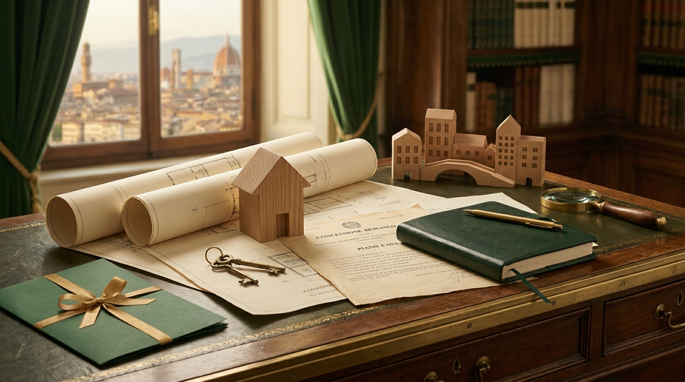

Piano casa ed ETS: nuovi confini tra Demanio, Sace e Terzo settore
Gli emendamenti al cosiddetto Piano casa allargano il perimetro dell'emergenza abitativa, chiamando in causa Terzo settore, Demanio e Sace. Per gli enti del Terzo settore si profilano nuove opportunità di accesso a immobili pubblici e a strumenti di garanzia. Conviene però distinguere ciò che è già disciplinato da ciò che resta in discussione parlamentare.

Il contesto
L'emergenza abitativa torna al centro dell'agenda legislativa. Gli emendamenti al cosiddetto "Piano casa", in discussione con data di riferimento al 13 giugno 2026, ipotizzano un coinvolgimento diretto di tre attori eterogenei: il Terzo settore, l'Agenzia del Demanio e Sace.
L'obiettivo dichiarato è mobilitare patrimonio pubblico inutilizzato e strumenti di garanzia per progetti di alloggio sociale. Si tratta, allo stato, di proposte non ancora tradotte in norme vigenti. Il loro interesse per gli enti del Terzo settore (ETS) è però concreto, perché tocca attività già rientranti nel loro perimetro istituzionale.
Inquadramento normativo
Il Codice del Terzo settore (D.lgs. 117/2017) include l'alloggio sociale tra le attività di interesse generale. Il riferimento esatto è l'art. 5, comma 1, lett. q), che richiama espressamente l'"alloggio sociale" e ogni altra attività di carattere residenziale temporaneo diretta a soddisfare bisogni sociali, sanitari, culturali, formativi o lavorativi. È questa la base che consente a un ETS di operare nell'housing sociale come attività statutaria, non come iniziativa estranea alla propria missione.
Sul versante dei beni pubblici rileva l'art. 71 del medesimo Codice. La norma disciplina l'individuazione di immobili pubblici, anche statali, non utilizzati, che possono essere concessi in comodato agli ETS per lo svolgimento delle attività di interesse generale, a fronte di un progetto di utilità sociale. È il meccanismo che gli emendamenti intendono valorizzare, collegandolo al patrimonio gestito dal Demanio.
Il ruolo di Sace, invece, non discende da una previsione del Codice. Nelle proposte in esame le sarebbe attribuita una funzione di garanzia a sostegno delle operazioni di edilizia sociale. Va detto con chiarezza: si tratta di un'anticipazione legata al testo in discussione, non di una competenza già operante. Andrà verificata nella formulazione definitiva.
Implicazioni pratiche
Per l'ETS che operi o intenda operare nell'abitare sociale, il quadro apre prospettive ma impone cautela.
La prima questione è la coerenza statutaria. L'attività deve rientrare tra quelle di interesse generale ex art. 5 o, se diversa, rispettare i limiti dell'art. 6 CTS, che ammette le attività diverse solo se secondarie e strumentali. Un'operazione immobiliare di rilievo va misurata su questo parametro per non snaturare la qualificazione dell'ente.
La seconda riguarda il divieto di distribuzione indiretta di utili. Eventuali ricavi da canoni o servizi devono restare funzionali alle finalità civiche e solidaristiche, senza tradursi in vantaggi patrimoniali per amministratori, associati o soggetti collegati.
La terza attiene alla qualificazione fiscale dell'attività. La natura commerciale o non commerciale dipende dal rapporto tra corrispettivi e costi effettivi: se i corrispettivi non superano i costi, l'attività tende a restare non commerciale; in caso contrario assume rilevanza commerciale, con effetti su imposizione e regimi applicabili. È un profilo da valutare a monte, perché incide sull'intera sostenibilità del progetto.
Cosa fare in concreto
- Verificare che l'attività di housing sociale sia coerente con l'oggetto statutario ex art. 5 CTS o, in alternativa, riconducibile ai limiti delle attività diverse ex art. 6.
- Mappare gli immobili pubblici potenzialmente concedibili in comodato ex art. 71 e predisporre un progetto di utilità sociale dettagliato.
- Analizzare in via preventiva la qualificazione fiscale, ricostruendo il rapporto tra corrispettivi attesi e costi.
- Monitorare l'iter parlamentare degli emendamenti, distinguendo le previsioni vigenti dalle proposte ancora in discussione, in particolare quanto al ruolo di Sace.
- È opportuno valutare presidi organizzativi adeguati a documentare il rispetto del divieto di distribuzione indiretta di utili.
Nota di metodo
Un annuncio non è una regola applicabile. Tra l'illustrazione di un emendamento e la sua entrata in vigore corre una distanza che può modificare nomi, strumenti e condizioni. Per il Terzo settore conviene oggi consolidare ciò che il Codice già consente — alloggio sociale ex art. 5 e comodato di immobili pubblici ex art. 71 — e seguire con attenzione il resto, senza anticipare scelte vincolanti su strumenti ancora privi di base normativa.
Contributo informativo a cura di Tamburro & Partners - Avv. Giuseppe Tamburro. Non costituisce parere legale.
Ogni ente del terzo settore ha la sua storia.
Se rappresenti un ETS e vuoi un confronto su governance, RUNTS o fiscalità, scrivi allo studio. Ti rispondiamo entro un giorno lavorativo.